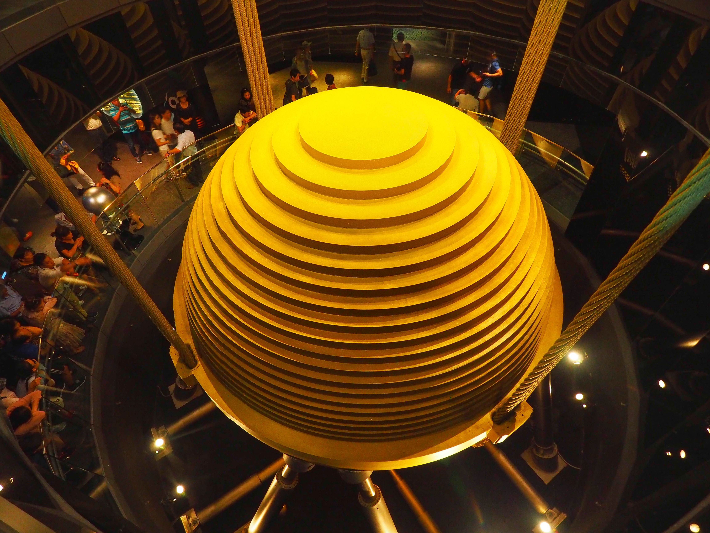

你好，欢迎来到我的《信息论40讲》。
我们在前面30多讲的课程中，以应用为核心介绍了信息论。大家可能知道与信息论几乎同时诞生的交叉学科还有两个，即控制论和系统论，它们被称为“（老）三论”。这些理论不仅在通信和控制等学术领域有非常重要的地位，而且对管理学和社会学有着深远的影响。
事实上，在书店里，你在管理类的专柜中看到的和“三论”有关的书，甚至会超过你在信息专柜中看到的。因此，为了帮助你更好地了解信息论，我们接下来用两讲的篇幅简单介绍一下控制论和系统论。这一讲我们先说说控制论。
但凡一个新理论的出现都需要两个先决条件——长期深入的思考和偶然的契机，当然很多时候还需要一个天才来推动。牛顿提出万有引力定律、爱因斯坦发现相对论、图灵提出图灵机的数学模型，都是如此。控制论也不例外，它的诞生，和神童、长期的思考，以及偶然的契机都有关。
先说说那位神童，他叫诺伯特·维纳，1894年出生于一个俄裔犹太人的家庭，父亲是哈佛大学的教师。维纳从小智力超常，3岁可以读写，3年读完了中学的课程，12岁申请大学时，他父亲为了不显得张扬，也为了保护他，没有让他报考哈佛大学，而是选择了哈佛北边10英里外的塔夫茨大学（Tufts University）。
维纳15岁时获得数学学士学位，同年被哈佛研究生院录取，攻读动物学，但是一年后他又转入康奈尔大学攻读哲学，然后又转回到哈佛继续攻读哲学，18岁就获得了哈佛大学的逻辑学博士学位。从维纳的求学经历来看，他在科学领域涉猎非常广泛。
维纳一生的经历相当丰富，年轻时还做过报社记者，后来先后来到澳大利亚的墨尔本大学和中国的清华大学短期任教。在清华大学期间，他还指导过华罗庚等人的工作。后来在自述中，他将在清华任教的1935年作为开创控制论的起点，因为在那里他有了对控制论深入的思考。
在清华大学当教授时，维纳的工作十分轻松，他也不喜欢交际。因此难得有大量闲暇时间思考数学问题，并且把他过去十多年读书和游学的心得再思考并进行总结。
就在那时，一个全新的理论正在他头脑里酝酿着。后来，他把这段时光称为自己学术生涯里一个特定的里程碑，因为那是他从一位学富五车的科学天才，变成一位开创全新领域的大师的转折点。
接下来就需要一个契机帮助他完成控制论从知识到理论临门一脚的升华了，这个契机就是二战。
二战时，维纳周围很多美国人都上前线为国效力去了，作为一名科学家，维纳留在了后方，但是他（和很多科学家）总觉得自己该为战争做点什么。于是，他就开始研究火炮控制问题。
在此之前，火炮的设定都是人为进行的，一旦对设定的计算完成，打出去的炮弹落在哪里就看运气了。如果没有打中目标，接下来的调整就看经验了，无法根据之前命中与否的结果，自动调整火炮的设计方位和仰角。
维纳在二战之前对通信理论和系统反馈已经有了深入的思考，他决定用他的理论改进火炮，这最终促成了控制论的诞生，当然这样改进后的火炮准确性大增。
二战之后，在1948年，维纳将自己在控制论上的研究成果发布了。
控制论的本质可以概括为下面三个要点。
首先，维纳突破了牛顿的绝对时间观。
什么是绝对时间观呢？在牛顿等人看来，时间是绝对恒定的物理量，比如昨天的一小时和今天的一小时是一样的，昨天出去玩了一小时没有做作业，今天多花一小时补上就可以了。
维纳采用了法国哲学家柏格森的时间观，即Duree这样一个概念，中文被译为“绵延”，意思是说，时间不是静态和片面的，事物发展的过程不能简单拆成一个个独立的因果关系。
比如昨天浪费了一小时，今天多花了一小时做作业，就少了一小时的休息，就可能造成第二天听课效果不好，因此浪费一小时和没有浪费一小时的人，其实已经不是同一个人了。
如果我们把这种观点应用到企业管理上，那么工厂主强制员工在某一天加班一小时，未必能够多生产出通常一小时生产的产品，因为多加班一小时的员工们已经不是原本的员工了。由于事物发展的过程前后高度耦合，也就是紧密咬合，没有空余。所以，我们在做事情时，就要考虑它的连带影响。
其次，任何系统（可以是我们人体系统、股市、商业环境、产业链，等等）在外界环境刺激（也称为输入）下必然作出反应（也称为输出），然后反过来影响系统本身，这一点很重要。维纳就是根据这个理论改进火炮的。
这一点，也可以很好地帮助我们理解资本市场。比如如果大家都觉得一种股票有利可图，大量购买，就会瞬间抬高股价，于是，炒股的人并不能赚到预想的收益。这便是市场的有效性。
正因如此，根据过去的经验或者任何已知的信号去操作当下的股市，都不可能达到预期。在维纳看来，任何系统，无论是机械系统、生命系统，乃至社会系统，撇开它们各自的形态，都存在这样的共性。
最后，为了维持一个系统的稳定，或者为了对它进行优化，可以将它对刺激的反应反馈回系统中，这最终可以让系统产生一个自我调节的机制。
比如上百层楼高的摩天大厦，在自然状态下会随风飘摆，顶层的位移会在一到两米之间，在大楼的顶上安装一个非常重的阻尼减震球，让它朝着与大楼摇摆相反的方向运动，大楼顶端飘移（输入）得越多，它往相反方向运动（输出）也越多，而这种反方向的运动反馈给大楼，最终会让大楼稳定。

在管理上，一个组织为了保证计划的实现，就要不断地对计划进行监控和调整，以防止偏差继续扩大。
维纳的理论后来被卡尔曼等人进一步发扬光大了，并且在阿波罗登月中发挥了巨大的作用。
说到登月所必需具备的条件，大家首先想到的会是火箭技术。但登月其实是一个巨大的系统工程，除了火箭技术，还需要很多相关的技术，比如如何保证火箭运行不出现偏差，准确到达预先设定的降落地点，就是一件很困难的事情。
阿波罗登月用的是土星五号火箭，他的设计师是德国过去的导弹之父冯·布劳恩。在二战后期，他设计并领导制造了著名的V-2导弹。虽然纳粹德国向英国发射了3000多枚，但是那些导弹完全没有准头，开始的一点点误差在长距离飞行后被各种因素（比如风力、温度、气压等等）不断叠加放大，落地完全不是预想的了。
到了美苏太空争霸时，加加林乘坐的飞船仅仅围绕地球转了一圈，最后他降落的地点和预想的还差出了上百公里。阿波罗登月火箭的飞行距离远比V-2导弹和加加林的飞船飞行的距离长得多，如果按照机械思维的方式继续改进火箭，即便考虑了所有能想到的因素，最终向月球发射的火箭恐怕会与预期落点要偏差出十万八千里。
所幸的是，就在冯·布劳恩等人研究火箭的同时，卡尔曼改进了维纳的控制理论，提出了著名的卡尔曼滤波，可以让火箭随时动态调整方向，这样才保证了它最终准确着陆。对比V-2和土星五号，可以看出确定的机械思维和不断调整的控制论思维两种方法论的差异，前者是对未来作一种尽可能确定的预测，后者则是根据变化不断进行调整。
我经常讲，在当今这个时代，我们要轻预测，重反应，其背后的科学原理就是控制论。我们在前面第7讲中介绍霍夫曼编码和风险投资时讲的方法，即不断对好的项目加倍投入，其实就是在投资上重反应的表现。
不仅在投资时应当如此，在做很多事情时，也需要不断调整策略。我经常讲，创业者要成为变色龙，而不是恐龙，也是这个道理。什么是恐龙呢？它们架子很大，很唬人，但是适应性差。
今天不少创业者喜欢一开始就给投资人画一个大饼，五年后的发展前景。其实稍微有点经验的投资人都不会看它，因为即便有稳定市场、核心技术、专业团队的上市公司，都很难对一年后的财报作准确预测，更何况一家初创公司呢？
很多成功的企业，它们最终做成的事情和创始人最初的想法相差十万八千里呢，因为环境和市场在不断变化。一个好的创始人需要是变色龙，他能不断应对环境变化作出调整，而不是一开始就把摊子铺得很大。希望这种做事方法对你能有所启发。
我们介绍了控制论的由来和它的应用，以及它的三个本质要点，即突破了传统的绝对时间观，利用反馈对系统进行控制，以及利用反馈让系统稳定。
我们用阿波罗登月的例子，说明了控制论思维和传统的机械论思维的差异，并且强调了我们今天需要轻预测，重反应，做变色龙。
思考题：能否思考一下坚持原则和调整想法之间的度应该如何把握？
预告：下一讲，我们来谈谈系统论。我们下一讲再见！